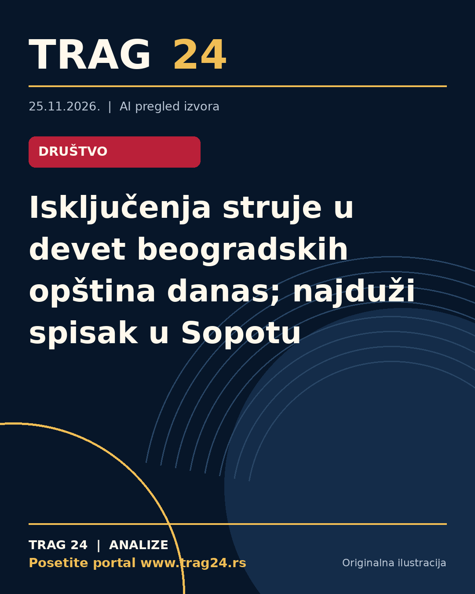

Isključenja struje u devet beogradskih opština danas; najduži spisak u Sopotu

ŠTA SE DOGODILO
Danas su planska isključenja električne energije najavljena za devet beogradskih opština, uključujući Palilulu, Voždovac, Čukaricu, Zemun, Obrenovac, Sopot, Mladenovac i Surčin. Najopsežniji spisak uličnih blokova bez struje je u opštini Sopot. Radovi na elektrodistributivnoj mreži su razlog za privremene prekide u snabdevanju, a trajanje isključenja varira od nekoliko sati tokom jutra do popodnevnih časova.
HRONOLOGIJA
Prema rasporedu objavljenom za 25. novembar 2026. godine, isključenja su počela oko 08:30 sati i trajaće do različitih termina, uglavnom do 14:00, 15:00 ili 15:30 sati, zavisno od lokacije. Na primer, u naselju Jabučki Rit planirano je isključenje od 09:00 do 12:00, u Jugoslavenskoj i Žarkovu od 08:30 do 14:00, dok će u Sopotu snabdevanje biti prekinuto od 08:30 do 14:30 sati.
ŠTA NAVODE IZVORI
Izvor Kurir navodi detaljan raspored i ulice u devet opština koje neće imati struju, sa preciznim adresama i vremenskim okvirima. Izvor Espreso potvrđuje isti spisak sa istim vremenima i opštinama, kao i zabeleženu dužinu spiska u Sopotu, dok Euronews Srbija ukazuje na najduži spisak isključenja u Sopotu i da će prekidi trajati od jutarnjih do popodnevnih časova. Izvori se slažu da su radovi na elektrodistributivnoj mreži razlog prekida.
ŠTA JE POTVRĐENO
Potvrđeno je da su isključenja planirana za 25. novembar 2026. godine u devet opština Beograda, da su usled radova na elektrodistributivnoj mreži i trajaće u raznim terminima tokom dana. Spisak ulica u Sopotu je najveći u odnosu na druge opštine. RHMZ je dao podatke o vremenskim uslovima vezanim za isti dan, ali se oni ne odnose direktno na isključenja struje.
ŠTA NIJE POTVRĐENO
Nema potvrde o bilo kakvim vanrednim situacijama ili incidentima koji su prouzrokovali isključenja, niti o tačnim razlozima pojedinačnih prekida. Takođe, nije potvrđeno da će doći do dodatnih promena u rasporedu isključenja tokom dana.
ŠTA OSTАJE OTVORENO: Nije poznato da li će tokom dana doći do produženja ili skraćenja isključenja, kao ni kakve mere su preduzete za korisnike kojima je snabdevanje isključeno. Ostaje nepoznato i da li će nastati veći problemi u snabdevanju ili saobraćaju zbog ovih radova i prekida.
Izvori
- https://www.euronews.rs/srbija/drustvo/253427/iskljucenja-struje-u-beogradu-za-sredu-25-novembar/vest
- https://www.kurir.rs/vesti/beograd/10171175/bez-struje-danas-u-beogradu
- https://www.espreso.co.rs/vesti/beograd/1631482/iskljucenje-struje-za-25-novembar-2026
Ova analiza je pripremljena uz pomoć veštačke inteligencije na osnovu javno dostupnih izvora. Navodi izvora nisu nužno nezavisno potvrđeni.